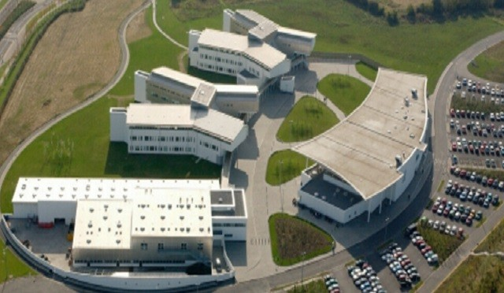

TU Dublin - Blanchardstown Campus
The TU Dublin is Ireland’s first Technological University it was established on 1st January 2019. Was Created from calaboration between Institute of Technology Blanchardstown, Dublin Institute of Technology and Institute of Technology Tallaght. Between all three campuses it has over 28 thousends students
The Blanchardstown capus is situated in Dublin 15 west of Blanchardstown and is obviously the best one. Its Mission is: "to continue to serve its students and the community by meeting the skills needs in the economy and increasing the level of participation in higher education and training, particularly in Dublin North-West and its environs. The Institute will do this by achieving consistently high standards of relevance and quality in teaching, research, development and consultancy". For Full Details visit official TU Dublin - Blanchardstown Our Mission, Vision and Values Page.